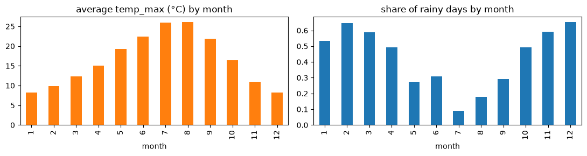

Practice tasks covered
- Practice 1 – import, load and view the dataset
- Practice 2 – summary and statistics (missing values, skew, seasonality, correlation)
- 1,461 days, four numbers per day (rain, highest and lowest temperature, wind), and nothing is missing.
- Precipitation is very skewed: most days are dry and a few are very wet (skew 3.5).
- Bayes' rule on real data: it rains tomorrow on 43% of days overall, 67% after a rainy day and only 24% after a dry day.
- Over-fitting is shown with polynomials: the training error keeps falling, the 2015 test error does not.

Run the code
Load the data, summarise it, and look at the seasons. This is real Python running in your browser. Edit it and press Run. The first run takes a little while to load Python.
week_1.pyPython · runs in your browser